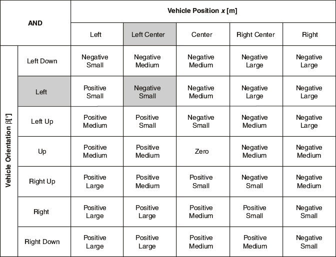

A rule base with at least one active rule for each possible combination of input linguistic variables and linguistic terms is a complete rule base. If you define an incomplete rule base, you must specify a default linguistic term for each output linguistic variable so the fuzzy controller can handle situations in which no rules are active.
The Vehicle Position x input linguistic variable has five linguistic terms, and the Vehicle Orientation β linguistic variable has seven linguistic terms. Therefore, the rule base of the vehicle maneuvering example consists of N = 5*7 = 35 rules. You can document the complete rule base in matrix form, as shown in the following image for the vehicle maneuvering fuzzy system.

In the previous image, each column or row represents an antecedent of a rule. The term at the intersection of a column and a row is the consequent of the rule corresponding to the aggregated rule antecedent. For example, the following rule is highlighted:
| IF Vehicle Position x is Left Center AND Vehicle Orientation β is Left, THEN Steering Angle φ is Negative Small. |
Plotting a rule base in matrix form, as in the previous image, is helpful for detecting inconsistencies, such as contradictory rules. However, plotting a rule base in matrix form is efficient only for small rule bases. Detecting inconsistencies in large rule bases is difficult. For fuzzy systems with numerous controller inputs, you can use cascading fuzzy systems to avoid large rule bases. In cascading fuzzy systems, the outputs of the first fuzzy system serve as the inputs to the next fuzzy system, and so on.